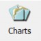
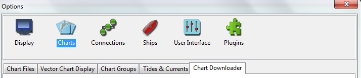

This section will cover the universe of charts thru the lens of OpenCPN: installing, using, finding, different formats supported, using purchased charts, and more.
Chart Files Tab Install charts & manage directories
Vector Display Tab Vector Display options
Chart Groups Tab Create & Manage chart groups
Chart Downloader Tab Download & update free charts.
Chart Manual Installation Instructions for installing charts.

Information on these can be accessed through the online wiki:
S63 Vector Charts Plugin
oeSENC Vector Charts Plugin
BSB4 Charts Plugin
NV Charts Plugin
Scaling Charts Use Scale tool to change chart scale.
Chart Quilting Display portions of charts at the same scale.
Chart Status Bar Chart Buttons for current charts at screen bottom.
Chart Information Right-click Chart Buttons at bottom of screen.
Chart Sources; Free chart sources list. (see online wiki).
Chart Formats Supported chart formats.
Background GSHHS Shoreline
High Resolution Background GSHHS Shoreline (see online wiki)
IMHO ECDIS ECDIS Standards
Advanced Chart Work
CM93 Offsets How to correct Offsets at your own risk.
Chart Conversion Manual, Kap, Imgkap, libBSB GE (see online wiki)